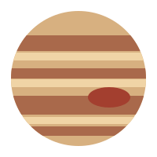

Самая большая планета
Юпитер — пятая планета от Солнца и крупнейшая в Солнечной системе. Он состоит главным образом из водорода и гелия, поэтому относится к газовым гигантам.
Интересный факт: Большое Красное Пятно — это огромный атмосферный вихрь, который наблюдают уже много лет.